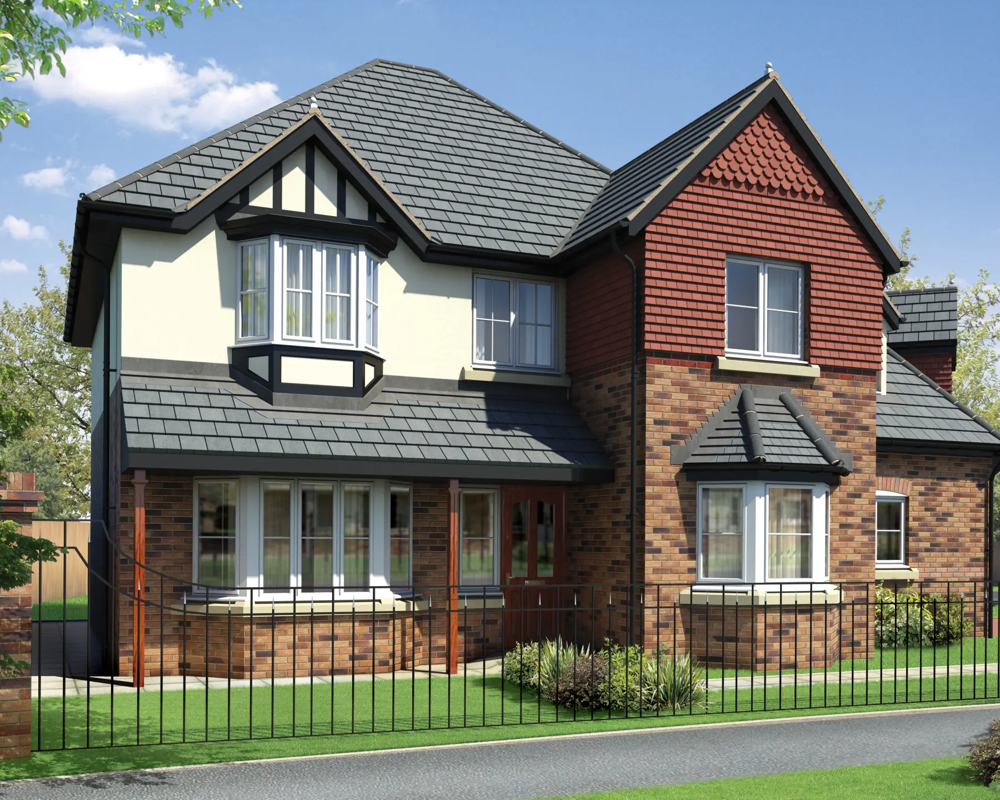
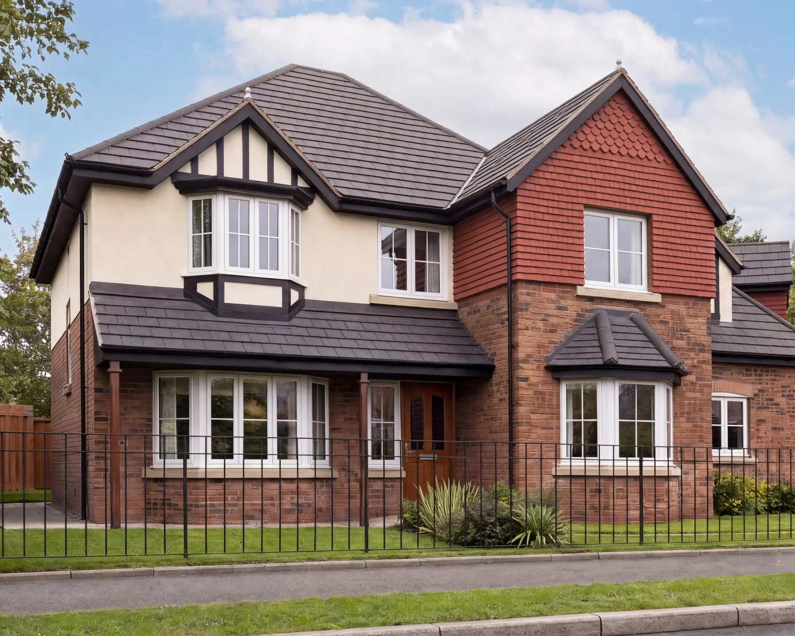
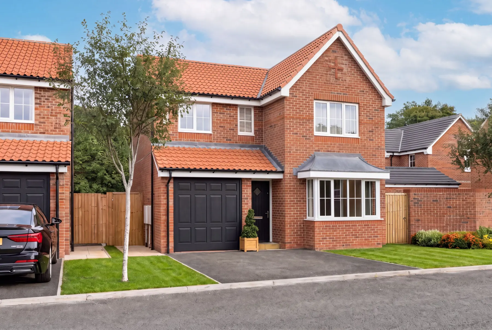
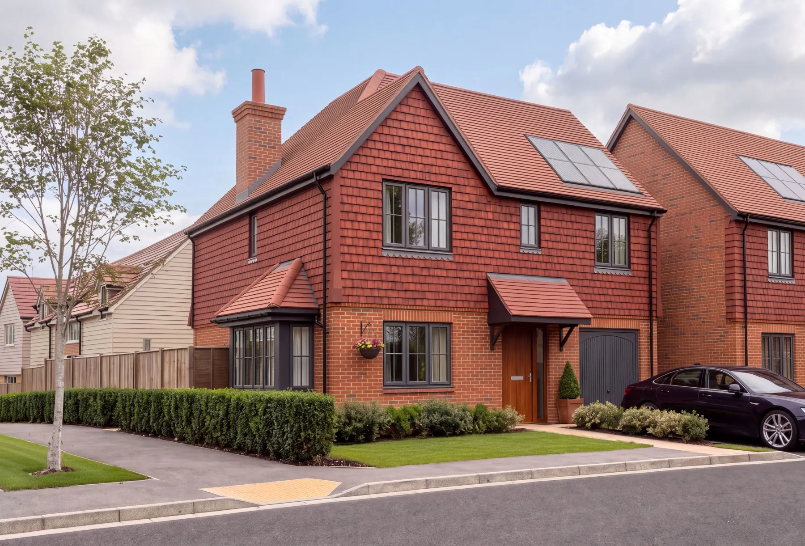
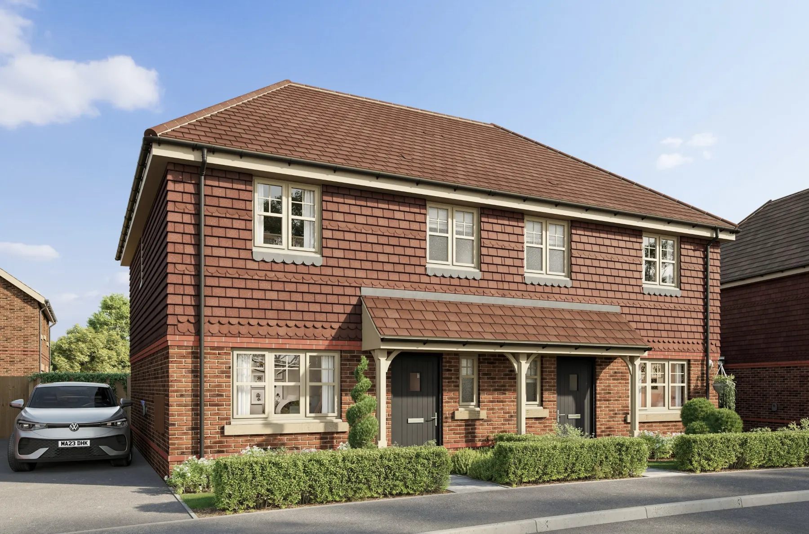
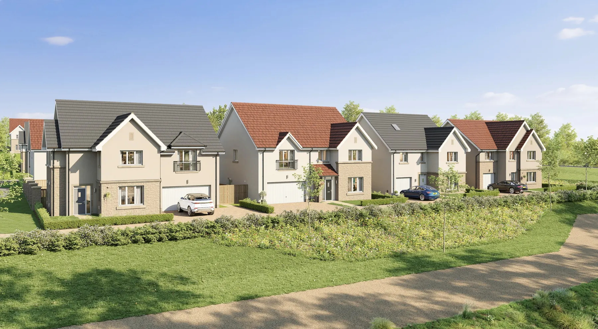
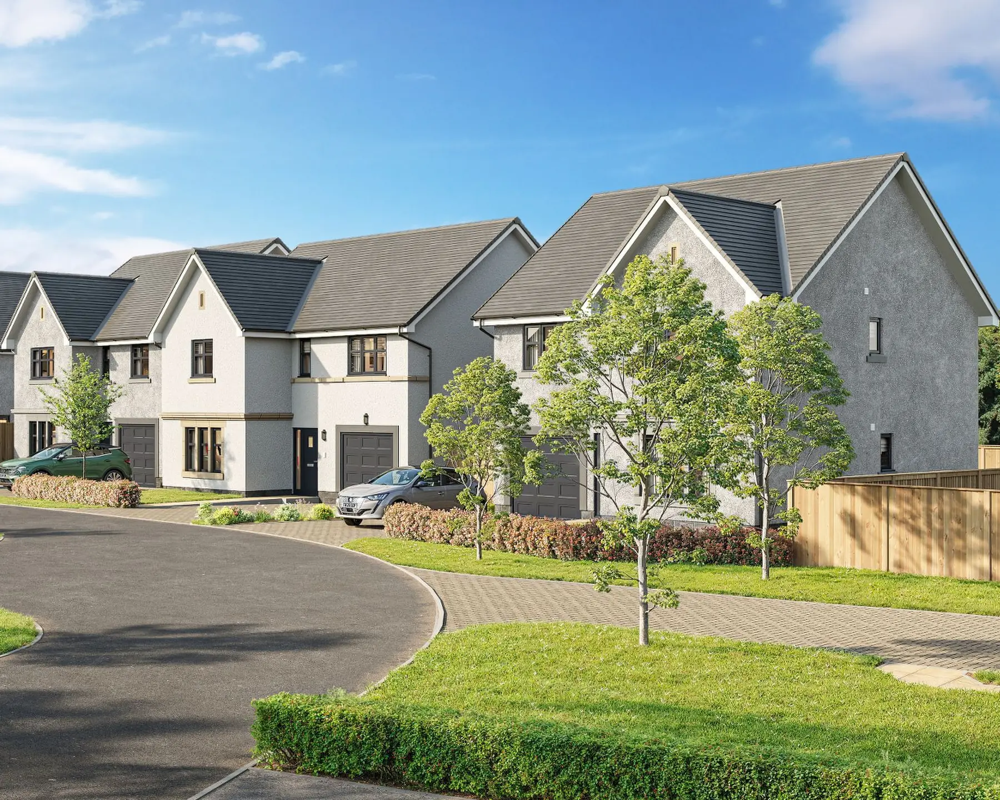
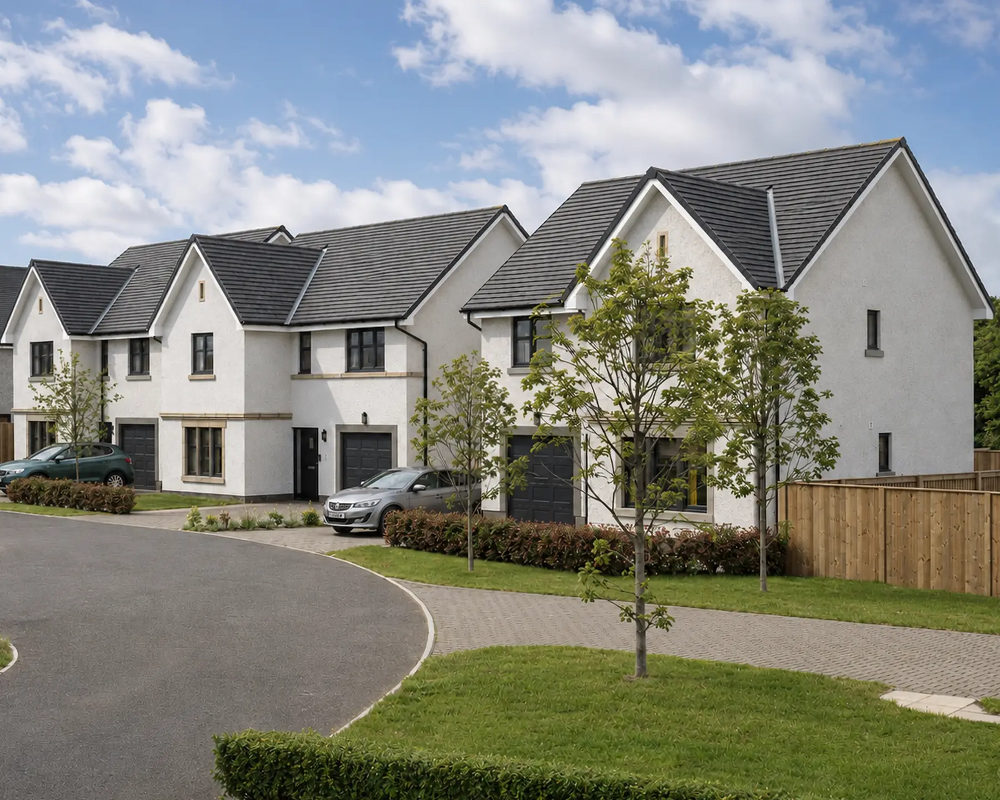

For off-plan sales
Stop waiting
Stop waiting
for the
photography.
The day plot one completes, you switch to photographs. Realify moves that quality to the start of the phase, using the exterior CGI you already own.
It doesn't matter who produced the original. Your first view is free, with nothing to sign. Read this before you send.










Six exterior views. Each is shown first as the CGI supplied by the client, then as the finished image.
Your CGI